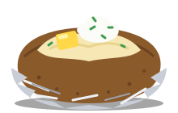
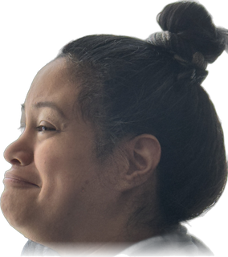
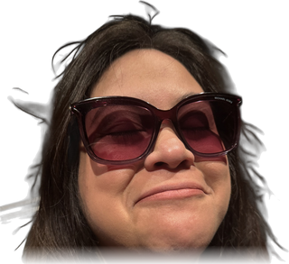
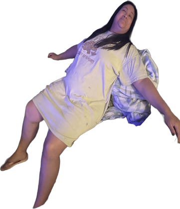
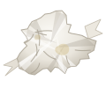

<title>Catch the Poot</title>
<meta name="claude:viewport-fit-sides" content="cover">
<link rel="preconnect" href="https://fonts.googleapis.com">
<link rel="stylesheet" href="https://fonts.googleapis.com/css2?family=Gluten:wght@500;700&family=Nunito:wght@400;700&display=swap">
<style>
  /* Layout: one night meadow that fills the screen; a slim scoreboard on top, the play field below. */
  /* Deliberately single-theme: it is always night in the meadow. */
  :root {
    color-scheme: dark;
    --sky-top: #0b1530;
    --sky-low: #16284a;
    --grass: #0f2a24;
    --glow: #f4e66b;
    --gold: #ffb347;
    --bad: #ff6b6b;
    --ink: #e8eefc;
    --muted: #9fb0d4;
    --panel: rgba(11, 21, 48, 0.82);
    --display: "Gluten", "Comic Sans MS", "Trebuchet MS", cursive;
    --body: "Nunito", "Segoe UI", system-ui, sans-serif;
  }
  [hidden] { display: none !important; }
  html, body { height: 100%; }
  body {
    background: var(--sky-top);
    color: var(--ink);
    font-family: var(--body);
    font-size: 16px;
    display: flex;
    flex-direction: column;
    padding-left: max(16px, env(safe-area-inset-left, 0px));
    padding-right: max(16px, env(safe-area-inset-right, 0px));
    padding-block: 12px;
    gap: 12px;
    box-sizing: border-box;
  }
  header {
    display: flex;
    align-items: center;
    justify-content: space-between;
    flex-wrap: wrap;
    gap: 8px 20px;
    max-width: 900px;
    width: 100%;
    margin: 0 auto;
  }
  h1 {
    font-family: var(--display);
    font-weight: 700;
    font-size: clamp(1.6rem, 5vw, 2.2rem);
    margin: 0;
    color: var(--glow);
    text-shadow: 0 0 18px rgba(244, 230, 107, 0.45);
  }
  .stats { display: flex; gap: 18px; font-variant-numeric: tabular-nums; }
  .stat { display: flex; flex-direction: column; align-items: flex-end; }
  .stat .label { font-size: 0.7rem; letter-spacing: 0.12em; text-transform: uppercase; color: var(--muted); }
  .stat .value { font-family: var(--display); font-size: 1.5rem; line-height: 1; }

  #field {
    position: relative;
    flex: 1;
    min-height: 340px;
    max-width: 900px;
    width: 100%;
    margin: 0 auto;
    border-radius: 18px;
    overflow: hidden;
    background:
      radial-gradient(ellipse 120% 40% at 50% 105%, var(--grass) 60%, transparent 61%),
      linear-gradient(var(--sky-top), var(--sky-low));
    touch-action: manipulation;
    user-select: none;
    -webkit-user-select: none;
  }
  .star { position: absolute; width: 2px; height: 2px; border-radius: 50%; background: var(--ink); opacity: 0.5; }
  .moon {
    position: absolute; top: 18px; right: 22px; width: 46px; height: 46px; border-radius: 50%;
    background: var(--ink); box-shadow: 0 0 30px rgba(232, 238, 252, 0.35); opacity: 0.85;
  }
  .moon::after {
    content: ""; position: absolute; inset: -4px -14px 4px 14px; border-radius: 50%; background: var(--sky-top);
  }

  .fly {
    position: absolute;
    width: 84px; height: 84px;
    margin: -42px 0 0 -42px;
    border: 0; padding: 0; background: transparent; cursor: pointer;
    animation: drift var(--drift, 2s) ease-in-out infinite alternate;
  }
  .ambient::before {
    content: ""; position: absolute; inset: 26px; border-radius: 50%;
    background: var(--c, var(--glow));
    box-shadow: 0 0 12px 4px var(--c, var(--glow)), 0 0 34px 10px color-mix(in srgb, var(--c, var(--glow)) 45%, transparent);
    animation: blink 1.1s ease-in-out infinite;
  }
  .fly img {
    width: 100%; height: 100%; object-fit: contain; display: block; pointer-events: none;
    rotate: var(--rot, 0deg);
    filter: drop-shadow(0 0 10px rgba(244, 230, 107, 0.6));
    animation: popin 0.25s ease-out, wiggle 0.6s ease-in-out 0.25s infinite alternate;
  }
  .fly.gold { width: 96px; height: 96px; margin: -48px 0 0 -48px; }
  .fly.gold img { filter: drop-shadow(0 0 12px rgba(255, 179, 71, 0.8)); }
  /* The couch photo drops from the sky instead of popping up in place. */
  .fly.faller {
    width: 130px; height: 150px; margin: 0 0 0 -65px; top: -160px; z-index: 2;
    animation: fall var(--fall, 3s) linear forwards;
  }
  .fly.faller img {
    filter: drop-shadow(0 0 12px rgba(232, 238, 252, 0.6));
    animation: sway 0.7s ease-in-out infinite alternate;
  }
  .fly.leaving img { animation: fade 0.35s forwards; }
  .fly:focus-visible { outline: 2px dashed var(--ink); outline-offset: 2px; border-radius: 50%; }
  .ambient { pointer-events: none; opacity: 0.55; }

  @keyframes blink { 0%, 100% { opacity: 1; transform: scale(1); } 50% { opacity: 0.55; transform: scale(0.85); } }
  @keyframes drift { from { translate: -10px 6px; } to { translate: 12px -8px; } }
  @keyframes popin { from { transform: scale(0); } to { transform: scale(1); } }
  @keyframes wiggle { from { transform: rotate(-5deg); } to { transform: rotate(5deg); } }
  @keyframes fall { to { top: 100%; } }
  @keyframes sway { from { transform: rotate(-12deg); } to { transform: rotate(12deg); } }
  @keyframes fade { to { opacity: 0; transform: scale(0.2); } }

  .pop {
    position: absolute; pointer-events: none; font-family: var(--display); font-weight: 700;
    color: var(--glow); font-size: 1.3rem; translate: -50% -50%;
    animation: rise 0.7s ease-out forwards;
  }
  .pop.gold { color: var(--gold); font-size: 1.6rem; }
  .pop.faller { color: var(--ink); font-size: 2rem; }
  .pop.motete { color: var(--bad); font-size: 1.6rem; white-space: nowrap; }
  /* The napkin tumbles instead of swaying. */
  .fly.faller.motete { width: 72px; height: 72px; margin-left: -36px; top: -90px; }
  .fly.faller.motete img { filter: none; animation: tumble 1.4s linear infinite; }
  @keyframes tumble { to { transform: rotate(360deg); } }
  .potato {
    position: absolute; left: 50%; bottom: 3%; width: 130px; translate: -50% 0;
    pointer-events: none; z-index: 1;
  }
  .steam {
    position: absolute; left: 50%; bottom: calc(3% + 74px); width: 60px; height: 40px; translate: -50% 0;
    pointer-events: none; z-index: 1;
  }
  .steam span {
    position: absolute; bottom: 0; width: 4px; height: 26px; border-radius: 4px;
    background: linear-gradient(transparent, rgba(232, 238, 252, 0.5));
    animation: steam 2.4s ease-in-out infinite;
  }
  .steam span:nth-child(1) { left: 14px; }
  .steam span:nth-child(2) { left: 28px; animation-delay: 0.8s; }
  .steam span:nth-child(3) { left: 42px; animation-delay: 1.6s; }
  @keyframes steam { 0% { opacity: 0; transform: translateY(6px) scaleY(0.6); } 40% { opacity: 1; } 100% { opacity: 0; transform: translateY(-18px) scaleY(1.1); } }
  @keyframes rise { to { opacity: 0; transform: translateY(-36px); } }

  .overlay {
    position: absolute; inset: 0; display: grid; place-items: center; padding: 16px;
    background: rgba(5, 10, 25, 0.45);
  }
  .card {
    background: var(--panel); border: 1px solid rgba(159, 176, 212, 0.25); border-radius: 16px;
    padding: 22px 24px; max-width: 360px; text-align: center; display: grid; gap: 12px;
  }
  .card h2 { font-family: var(--display); font-size: 1.7rem; margin: 0; color: var(--glow); text-wrap: balance; }
  .card p { margin: 0; color: var(--muted); line-height: 1.5; }
  .card .big { font-family: var(--display); font-size: 3rem; color: var(--ink); line-height: 1; }
  .legend { display: flex; justify-content: center; flex-wrap: wrap; gap: 8px 16px; font-size: 0.9rem; color: var(--ink); }
  .legend span { display: flex; align-items: center; gap: 4px; }
  .legend img { width: 40px; height: 40px; object-fit: contain; }
  button.go {
    font-family: var(--display); font-size: 1.25rem; font-weight: 700;
    background: var(--glow); color: var(--sky-top); border: 0; border-radius: 999px;
    padding: 10px 28px; cursor: pointer; justify-self: center;
    box-shadow: 0 0 20px rgba(244, 230, 107, 0.45);
  }
  button.go:hover { filter: brightness(1.08); }
  button.go:focus-visible { outline: 3px solid var(--ink); outline-offset: 3px; }

  @media (prefers-reduced-motion: reduce) {
    .fly:not(.faller), .ambient::before, .fly img, .steam span { animation: none; }
    .pop { animation-duration: 0.01s; }
  }
</style>

<header>
  <h1>Catch the Poot</h1>
  <div class="stats">
    <div class="stat"><span class="label">Caught</span><span class="value" id="score">0</span></div>
    <div class="stat"><span class="label">Time</span><span class="value" id="time">30</span></div>
    <div class="stat"><span class="label">Best</span><span class="value" id="best">0</span></div>
  </div>
</header>

<main id="field" aria-label="Meadow">
  <div class="moon"></div>
  <div class="steam" aria-hidden="true"><span></span><span></span><span></span></div>
  
  <div class="overlay" id="overlay">
    <div class="card">
      <h2 id="title">Catch her before she flies away!</h2>
      <div class="big" id="final" hidden></div>
      <p id="msg">Tap each face before it disappears, and catch her when she falls from the sky. Don’t touch the motete! Turn your sound on. You have 30 seconds.</p>
      <div class="legend">
        <span>1 point</span>
        <span>3 points</span>
        <span>5 points</span>
        <span>Motete: lose 3</span>
      </div>
      <button class="go" id="go" type="button">Start</button>
    </div>
  </div>
</main>

<script>
  const field = document.getElementById('field');
  const overlay = document.getElementById('overlay');
  const scoreEl = document.getElementById('score');
  const timeEl = document.getElementById('time');
  const bestEl = document.getElementById('best');
  const ROUND = 30;
  const gordo = new Audio('assets/gordo.mp3');
  gordo.preload = 'auto';
  const whine = new Audio('assets/gordo-whine.mp3');
  whine.preload = 'auto';
  // Preload the faces so the first one shows up instantly.
  ['assets/head-side.png', 'assets/head-glasses.png', 'assets/falling.png', 'assets/motete.svg'].forEach(src => { new Image().src = src; });

  let score = 0, timeLeft = ROUND, playing = false, spawnTimer = null, fallTimer = null, moteteTimer = null, clockTimer = null;
  let best = 0;
  try { best = Number(localStorage.getItem('firefly-best')) || 0; } catch (e) {}
  bestEl.textContent = best;

  // Scatter some stars across the sky.
  for (let i = 0; i < 40; i++) {
    const s = document.createElement('div');
    s.className = 'star';
    s.style.left = Math.random() * 100 + '%';
    s.style.top = Math.random() * 65 + '%';
    s.style.opacity = (0.2 + Math.random() * 0.6).toFixed(2);
    field.prepend(s);
  }

  function place(el) {
    el.style.left = (8 + Math.random() * 84) + '%';
    el.style.top = (10 + Math.random() * 75) + '%';
    el.style.setProperty('--drift', (1.4 + Math.random() * 1.6).toFixed(2) + 's');
  }

  // A few lazy fireflies float behind the start screen so the meadow never looks empty.
  function addAmbient() {
    for (let i = 0; i < 6; i++) {
      const f = document.createElement('div');
      f.className = 'fly ambient';
      place(f);
      field.insertBefore(f, overlay);
    }
  }
  addAmbient();

  function spawn() {
    if (!playing) return;
    const fly = document.createElement('button');
    fly.type = 'button';
    const gold = Math.random() < 0.12;
    fly.className = 'fly' + (gold ? ' gold' : '');
    fly.setAttribute('aria-label', gold ? 'Sunglasses face, 3 points' : 'Face, 1 point');
    const face = document.createElement('img');
    face.src = gold ? 'assets/head-glasses.png' : 'assets/head-side.png';
    face.alt = '';
    // She glances left or right with a slight tilt, like she's looking around.
    if (!gold && Math.random() < 0.5) fly.style.transform = 'scaleX(-1)';
    face.style.setProperty('--rot', Math.round(Math.random() * 50 - 25) + 'deg');
    fly.appendChild(face);
    place(fly);
    // Faces get quicker as the clock runs down.
    const life = (gold ? 900 : 1300) + timeLeft * 30;
    const timeout = setTimeout(() => leave(fly), life);
    onTap(fly, () => catchFly(fly, gold ? 'gold' : '', timeout));
    field.insertBefore(fly, overlay);
    spawnTimer = setTimeout(spawn, 380 + Math.random() * 420);
  }

  // Every few seconds she falls from the top of the sky to the grass.
  function spawnFaller() { drop('faller'); fallTimer = setTimeout(spawnFaller, 4000 + Math.random() * 4000); }
  // A used napkin (a "motete") falls too. Tapping it costs points.
  function spawnMotete() { drop('motete'); moteteTimer = setTimeout(spawnMotete, 2500 + Math.random() * 3000); }

  function drop(kind) {
    if (!playing) return;
    const fly = document.createElement('button');
    fly.type = 'button';
    fly.className = 'fly faller' + (kind === 'motete' ? ' motete' : '');
    fly.setAttribute('aria-label', kind === 'motete' ? 'Motete, lose 3 points' : 'Falling Poot, 5 points');
    const img = document.createElement('img');
    img.src = kind === 'motete' ? 'assets/motete.svg' : 'assets/falling.png';
    img.alt = '';
    fly.appendChild(img);
    fly.style.left = (12 + Math.random() * 76) + '%';
    fly.style.setProperty('--fall', (2.4 + Math.random() * 1.2).toFixed(2) + 's');
    fly.addEventListener('animationend', (e) => { if (e.target === fly) fly.remove(); });
    onTap(fly, () => catchFly(fly, kind));
    field.insertBefore(fly, overlay);
  }

  // A sad trombone-style "bwomp" for touching the motete.
  let audioCtx = null;
  function bwomp() {
    try {
      audioCtx = audioCtx || new (window.AudioContext || window.webkitAudioContext)();
      const t = audioCtx.currentTime, osc = audioCtx.createOscillator(), gain = audioCtx.createGain();
      osc.type = 'sawtooth';
      osc.frequency.setValueAtTime(220, t);
      osc.frequency.exponentialRampToValueAtTime(90, t + 0.45);
      gain.gain.setValueAtTime(0.18, t);
      gain.gain.exponentialRampToValueAtTime(0.001, t + 0.5);
      osc.connect(gain).connect(audioCtx.destination);
      osc.start(t); osc.stop(t + 0.5);
    } catch (e) {}
  }

  function onTap(el, fn) {
    el.addEventListener('pointerdown', (e) => { e.preventDefault(); fn(); });
    el.addEventListener('keydown', (e) => {
      if (e.key === 'Enter' || e.key === ' ') { e.preventDefault(); fn(); }
    });
  }

  function leave(fly) {
    fly.classList.add('leaving');
    fly.disabled = true;
    setTimeout(() => fly.remove(), 350);
  }

  function catchFly(fly, kind, timeout) {
    if (!playing || fly.disabled) return;
    clearTimeout(timeout);
    const points = { faller: 5, gold: 3, motete: -3 }[kind] || 1;
    score = Math.max(0, score + points);
    // Chipmunk voice for the sunglasses face, a pleading "Gordooo" for the falling one.
    if (kind === 'motete') bwomp();
    else {
      const clip = (kind === 'faller' ? whine : gordo).cloneNode();
      if (kind === 'gold') { clip.preservesPitch = false; clip.playbackRate = 1.3; }
      clip.play().catch(() => {});
    }
    scoreEl.textContent = score;
    const pop = document.createElement('div');
    pop.className = 'pop' + (kind ? ' ' + kind : '');
    pop.textContent = points < 0 ? points + ' motete!' : '+' + points;
    const box = fly.getBoundingClientRect(), area = field.getBoundingClientRect();
    pop.style.left = (box.left + box.width / 2 - area.left) + 'px';
    pop.style.top = (box.top + box.height / 2 - area.top) + 'px';
    field.appendChild(pop);
    setTimeout(() => pop.remove(), 700);
    fly.remove();
  }

  function start() {
    field.querySelectorAll('.fly').forEach(f => f.remove());
    score = 0; timeLeft = ROUND; playing = true;
    scoreEl.textContent = 0; timeEl.textContent = ROUND;
    overlay.hidden = true;
    spawn();
    fallTimer = setTimeout(spawnFaller, 2000);
    moteteTimer = setTimeout(spawnMotete, 3500);
    clockTimer = setInterval(() => {
      timeLeft--;
      timeEl.textContent = timeLeft;
      if (timeLeft <= 0) end();
    }, 1000);
  }

  function end() {
    playing = false;
    clearInterval(clockTimer);
    clearTimeout(spawnTimer);
    clearTimeout(fallTimer);
    clearTimeout(moteteTimer);
    field.querySelectorAll('.fly').forEach(f => f.remove());
    const newBest = score > best;
    if (newBest) {
      best = score;
      bestEl.textContent = best;
      try { localStorage.setItem('firefly-best', best); } catch (e) {}
    }
    document.getElementById('title').textContent = newBest ? 'New best score!' : 'Time’s up!';
    const final = document.getElementById('final');
    final.hidden = false;
    final.textContent = score;
    document.getElementById('msg').textContent =
      score === 1 ? 'You scored 1 point. Gordo!' : 'You scored ' + score + ' points. Gordo!';
    document.getElementById('go').textContent = 'Play again';
    addAmbient();
    overlay.hidden = false;
    document.getElementById('go').focus();
  }

  document.getElementById('go').addEventListener('click', start);
</script>
